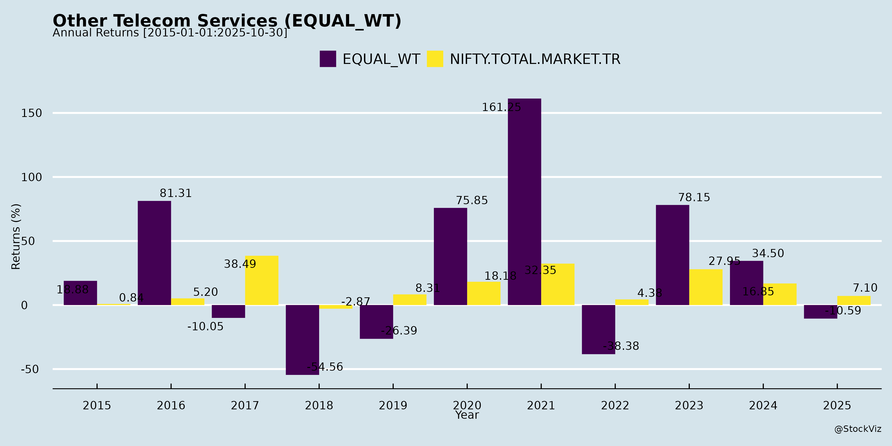
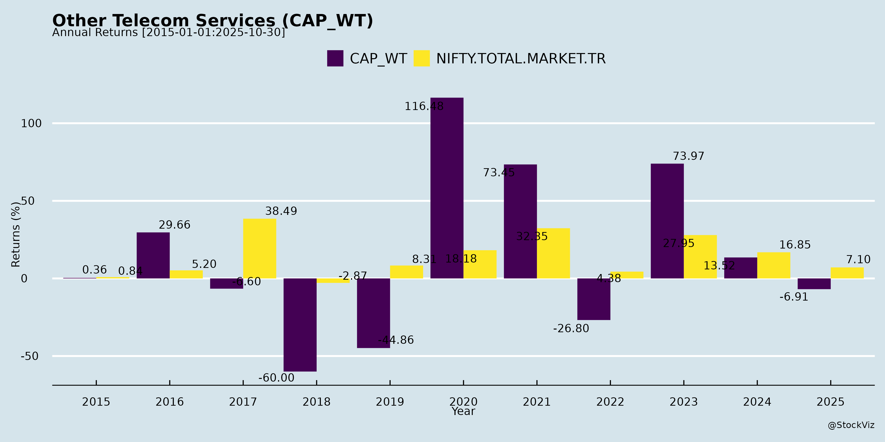
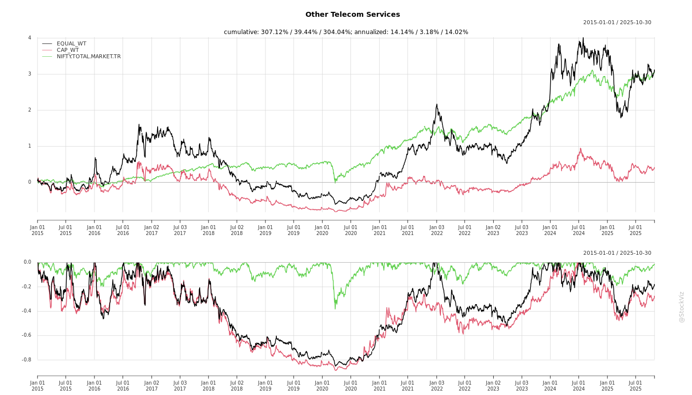
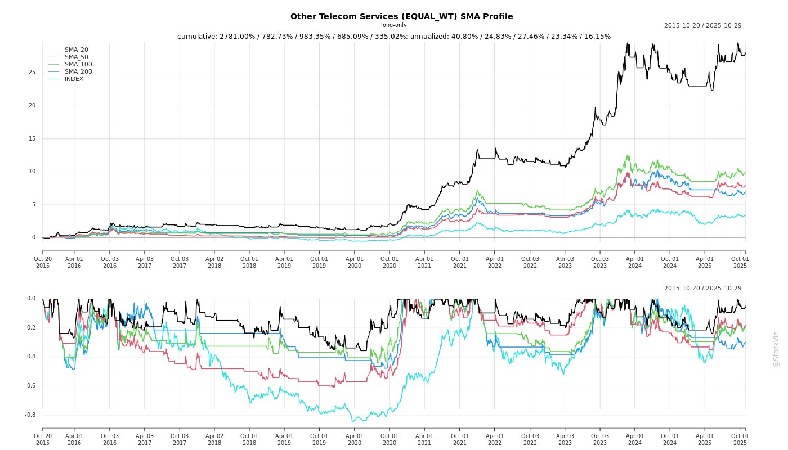
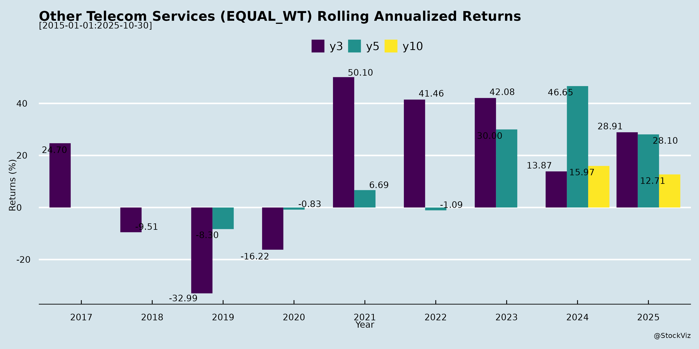
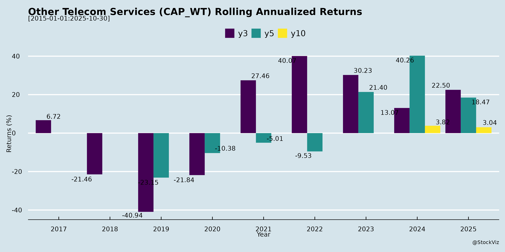

asof: 2025-11-29
Summary Analysis: Indian Other Telecom Services Sector
(Insights derived from RailTel Corporation and Route Mobile Q2/H1 FY26 Earnings Transcripts. RailTel represents infra/project-heavy telecom services (e.g., NLD, ISP, data centers, Kavach); Route Mobile exemplifies CPaaS/omnichannel (SMS, WhatsApp, RCS, firewalls). Sector shows resilient growth amid digitalization, but faces pricing/mix pressures.)
Tailwinds (Positive Drivers)
Headwinds (Challenges)
Growth Prospects
Key Risks
Overall Outlook: Sector poised for 20-25%+ growth (profitable, infra-led), driven by digital tailwinds, but headwinds from competition/SMS shift cap margins at 11-12%. RailTel offers stability via orders; Route higher-beta via products/partnerships. Monitor execution and mix for sustained momentum.
asof: 2025-11-29
Analysis of Indian Other Telecom Services Sector (Based on Q3 FY25 Financial Results)
The “Other Telecom Services” sector encompasses niche players in telecom infrastructure (e.g., network services, installation), digital communication platforms (e.g., CPaaS/messaging), and project-based services (e.g., telecom works for railways). Analyzed companies include GTL Limited (network services, distressed), RailTel (telecom infra/projects, strong performer), Route Mobile (CPaaS/messaging, high-growth), Uniinfo Telecom (installation services, struggling), and Megasoft (transitioning, negligible revenue). Sector shows polarization: high-performers like RailTel and Route Mobile drive growth via infra/digital demand, while debt-laden firms (GTL, Uniinfo) face existential challenges. Aggregate revenue trends: mixed (RailTel/Route up ~15-20% YoY; GTL/Uniinfo down 20-40%).
Headwinds (Key Challenges)
Tailwinds (Supportive Factors)
Growth Prospects (Medium-Term Outlook)
| Company | 9M FY25 Rev (₹ Cr) | YoY Growth | 9M FY25 PAT (₹ Cr) |
|---|---|---|---|
| RailTel | 2,169 | +25% | 186 (+10%) |
| Route (Cons) | 3,401 | +13% | 274 (-7%, forex adj.) |
| GTL | 184 | +35%* | -20 (loss) |
| Uniinfo (Cons) | 259 | -38% | -9 (loss) |
| *GTL revenue up but profits crushed by forex/debt. |
Key Risks
Summary: Sector bifurcated—growth stars (RailTel, Route: 15-25% rev growth, resilient margins) leverage 5G/digital tailwinds, while distressed players (GTL, Uniinfo) weigh down averages via debt/forex headwinds. Prospects bright for infra/CPaaS (CAGR 15%+), but risks tilt negative (insolvency/forex). Investors favor leaders; monitor GTL resolution for sector sentiment. Aggregate 9M FY25: Revenue +10-15% YoY (led by winners), but PAT volatile due to outliers.
asof: 2025-12-03
Analysis of Indian Other Telecom Services Sector
Using the provided documents as primary inputs (filings from RailTel, Route Mobile, Megasoft, STL Networks, GTL, and Uniinfo Telecom Services under SEBI LODR Reg 30), the analysis focuses on “Other Telecom Services” (non-major telco sub-sector including telecom infra, CPaaS, optical networking, rail telecom, and ancillary services). These filings highlight compliance, AGMs, expansions, fundraising, and resolutions, offering indirect sector insights amid India’s 5G/data boom. Inferences are drawn from company actions, with broader sector context for completeness.
Tailwinds (Positive Factors)
Headwinds (Challenges)
Growth Prospects
Key Risks
| Risk Category | Description | Evidence from Filings |
|---|---|---|
| Financial/Leverage | High debt (e.g., STL NCDs with default interest at +2%) amid rising rates; covenant breaches possible. | STL Annexure I (charge on assets, maturity 2027). |
| Regulatory/Legal | Ongoing SEBI/NCLT scrutiny; non-compliance penalties. | GTL NCLT update; all Reg 30 filings. |
| Operational | Acquisition integration (currency, culture); shareholder outreach costs. | Megasoft SPA completion; RailTel/Route physical letters. |
| Market | Competition from majors (Jio/Airtel infra arms); 5G capex delays. | Indirect via capex needs (STL). |
| Execution | Auditor/governance transitions; e-voting cutoffs (Route: Sep 5). | Uniinfo auditor appt; AGMs. |
Summary: Bullish tailwinds from 5G/digital infra outweigh headwinds, with strong growth prospects (double-digit revenue potential FY26+ via expansions/fundraises). Risks center on debt and execution, but resolutions (GTL) and compliance (all firms) mitigate near-term threats. Monitor FY24-25 ARs (links in RailTel/Route) for financials; sector poised for outperformance vs. broader telecom.
asof: 2025-11-29
Analysis of Indian Other Telecom Services Sector
Using the Q2 FY26 earnings transcripts of RailTel Corporation of India Limited (focus: telecom services, projects, data centers, Kavach for railways) and Route Mobile Limited (focus: CPaaS, SMS routing, omnichannel like WhatsApp/RCS/email, firewalls) as proxies for the “Indian Other Telecom Services” sector (non-core telecom including enterprise comms, digital infra, CPaaS), below is the analysis of headwinds, tailwinds, growth prospects, and key risks.
Tailwinds (Positive Drivers)
Headwinds (Challenges)
Growth Prospects
| Metric | RailTel (Q2/H1 FY26) | Route Mobile (Q2 FY26) |
|---|---|---|
| Revenue Growth | 28% QoQ / 20% YoY H1 | 6.5% QoQ / 0.5% YoY |
| EBITDA Margin | 11-12% guided | 11.9% |
| Order/New Product Pipeline | ₹8,251 Cr book | 13% QoQ new products |
Key Risks
Summary
The Indian Other Telecom Services sector shows strong tailwinds from digitalization (govt orders, data centers, omnichannel) and partnerships, driving 20-25%+ growth prospects (RailTel order execution; Route non-SMS ramp). Headwinds include low-margin projects, SMS shifts, and competition, but margin discipline (11-12%) sustains profitability. Key risks center on execution, govt dependency, and regulatory changes, but robust pipelines (₹8k+ Cr orders, new deals) signal momentum into FY27. Overall, positive outlook with focus on high-margin diversification outweighing near-term pressures; H2 FY26 likely stronger seasonally. Investors should monitor order conversion and non-SMS adoption for sustained double-digit growth.
asof: 2025-12-01
Summary Analysis: Indian Other Telecom Services Sector
Based on the provided filings from key players (RailTel, Route Mobile, Megasoft, STL Networks, GTL, Uniinfo), the sector shows resilience amid digital infra demand but faces execution and vendor challenges. High AGM approvals (>97-99% in most cases) signal strong governance and shareholder trust. Below is a structured analysis of headwinds, tailwinds, growth prospects, and key risks.
Tailwinds (Positive Drivers)
Headwinds (Challenges)
Growth Prospects
Key Risks
Overall Outlook: Moderately positive (6-8% sector growth FY26) driven by infra demand, but Q3 execution critical to offset vendor headwinds. Route’s issues are isolated but symptomatic of supply chain risks; monitor 5G tenders for RailTel/STL upside.
asof: 2025-11-29
Summary Analysis: Indian Other Telecom Services Sector
Using Route Mobile Limited’s Q2FY26 results (cloud communications/CPaaS) and Invenia-STL Networks’ contract win (digital infrastructure/data centers) as key inputs, here’s an analysis of headwinds, tailwinds, growth prospects, and key risks for the Indian Other Telecom Services sector (encompassing CPaaS, messaging/voice platforms, data center infra, system integration, and related digital services).
Headwinds
Tailwinds
Growth Prospects
Key Risks
| Risk Category | Description | Mitigation Insight from Docs |
|---|---|---|
| Profitability/Volatility | Exceptional items and carrier shifts could recur, eroding PAT (Route Mobile’s EPS at -Rs. 3.37). | Diversified model; focus on innovation. |
| Execution/Dependency | Large projects (e.g., STL’s greenfield data center) face delays/tech risks; client concentration (govt./telcos). | Domain expertise cited; long-term O&M contracts. |
| Competition/Regulation | Intense rivalry (e.g., global CPaaS peers); evolving SMS/voice regs or data sovereignty rules. | Agility in market dynamics (Route Mobile). |
| Macro/External | Telecom slowdowns, forex (global ops), sustainability mandates. | Sustainable infra focus (STL). |
Overall Outlook: Sector shows resilience with revenue stability and infra wins offsetting near-term headwinds. Growth hinges on navigating competition via innovation/differentiation, with 10-15% CAGR feasible if profitability stabilizes. Route Mobile signals caution on earnings quality; STL highlights infra tailwinds. Investors should monitor Q3 execution and exceptional item trends.
Copyright © 2023 SAS Data Analytics Pvt. Ltd. All rights reserved.